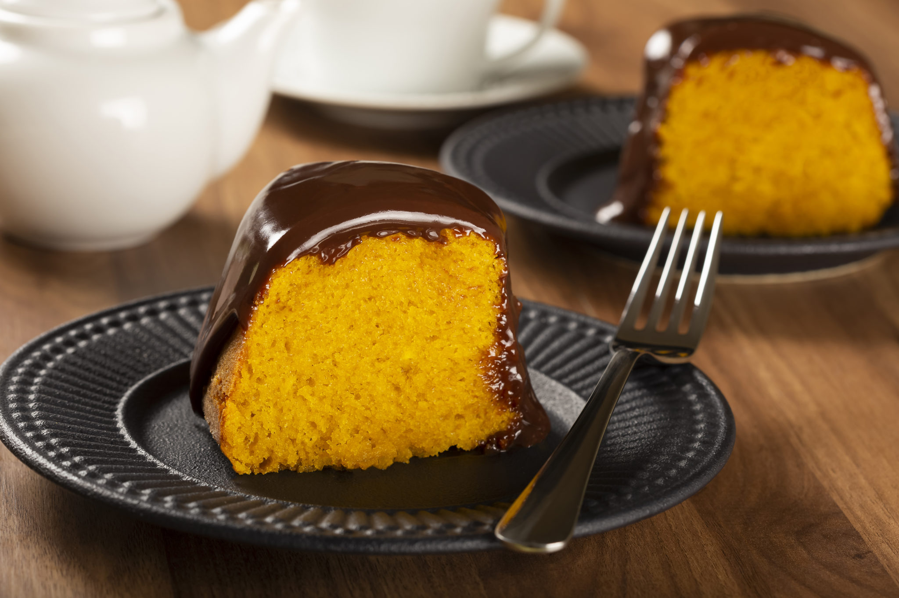

BOLO DE CENOURA

Essa é uma receita de um bolode de cenoura rápido e fácil de fazer.
Ingredientes
- 3 cenouras médias raladas
- 3 ovos
- 1 xícara de óleo
- 2 xícaras de açúcar
- 2 xícars de farinha de trigo
- 1 colher sopa de fermento em pó
- 1 pitada de sal
Modo de Preparo
- Bata no liquidificador as cenouras, os ovos e o óleo
- Em um tigela misture a farinha, o açúcar, o fermento e o sal
- Adicione a mistura líquida à mistura seca e misture bem
- Despeje a massa em uma forma untada e enfarinhada
- Leve ao forno pré aquecido à 180°C por cerca de 40 minutos ou até que um palito saia limpo ao ser espetado no centro do bolo